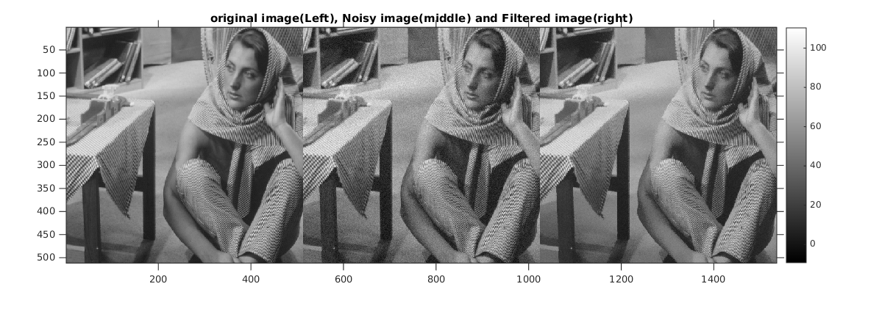
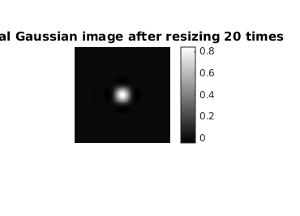
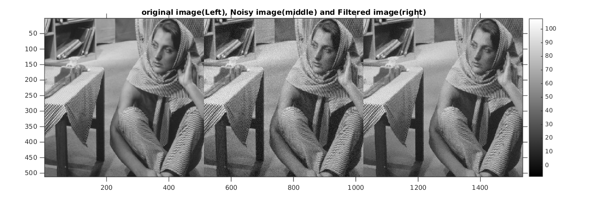
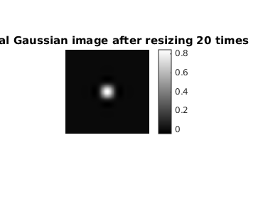

Contents
MyMainScript
tic;
Output with Window size = 25, patch size = 9 and sigma value = 5 (optimal RMSD value)
%Parameter Values window_size = 25; %Window Size patch_size = 9; %Patch Size sigma_value = 5; %Sigma Value standard_dev_patch_gauss = .4; %SD of patch gaussian scaling_factor = 1; %Scaling factor % The patch gaussian standard deviation value has been taken as 0.4 [op_image_final_optimal, spacial_mask, m, n, RMSD] = myPatchBasedFiltering('barbara', window_size, patch_size, sigma_value, standard_dev_patch_gauss, scaling_factor);
The original image(Left), Noisy image(middle) and Filtered image(right) has been shown
figure imshow(op_image_final_optimal, []), title('original image(Left), Noisy image(middle) and Filtered image(right)'), colorbar; axis([1 3*n 1 m]), axis on
Warning: Image is too big to fit on screen; displaying at 67%
%Spacial gaussian mask value has been shown below by resizing it 20 times figure imshow(spacial_mask, []), title('Spacial Gaussian image after resizing 20 times'), colorbar;
%The parameter values: disp(strcat('The RMSD value is: ', num2str(RMSD))); disp(strcat('The Sigma spacial value is: ', num2str(sigma_value))); toc; tic;
The RMSD value is:2.9486 The Sigma spacial value is:5 Elapsed time is 1882.119880 seconds.
Output with Window size = 25, patch size = 9 and sigma value = .9 * sigma_value = 4.5
%Parameter Values window_size = 25; %Window Size patch_size = 9; %Patch Size sigma_value_new = .9 * sigma_value; %Sigma Value standard_dev_patch_gauss = .4; %SD of patch gaussian scaling_factor = 1; %Scaling factor % The patch gaussian standard deviation value has been taken as 0.4 [op_image_final_small_sigma, spacial_mask, m, n, RMSD] = myPatchBasedFiltering('barbara', window_size, patch_size, sigma_value_new, standard_dev_patch_gauss, scaling_factor);
The original image(Left), Noisy image(middle) and Filtered image(right) has been shown
figure imshow(op_image_final_small_sigma, []), title('original image(Left), Noisy image(middle) and Filtered image(right)'), colorbar; axis([1 3*n 1 m]), axis on
Warning: Image is too big to fit on screen; displaying at 67%
%Spacial gaussian mask value has been shown below by resizing it 20 times figure imshow(spacial_mask, []), title('Spacial Gaussian image after resizing 20 times'), colorbar;
%The parameter values: disp(strcat('The RMSD value is: ', num2str(RMSD))); disp(strcat('The Sigma spacial value is: ', num2str(sigma_value_new))); toc; tic;
The RMSD value is:2.9687 The Sigma spacial value is:4.5 Elapsed time is 1838.843672 seconds.
Output with Window size = 25, patch size = 9 and sigma value = 1.1 * sigma_value = 5.5
%Parameter Values window_size = 25; %Window Size patch_size = 9; %Patch Size sigma_value_new = 1.1 * sigma_value; %Sigma Value standard_dev_patch_gauss = .4; %SD of patch gaussian scaling_factor = 1; %Scaling factor % The patch gaussian standard deviation value has been taken as 0.4 [op_image_final_large_sigma, spacial_mask, m, n, RMSD] = myPatchBasedFiltering('barbara', window_size, patch_size, sigma_value_new, standard_dev_patch_gauss, scaling_factor);
The original image(Left), Noisy image(middle) and Filtered image(right) has been shown
figure imshow(op_image_final_large_sigma, []), title('original image(Left), Noisy image(middle) and Filtered image(right)'), colorbar; axis([1 3*n 1 m]), axis on
Warning: Image is too big to fit on screen; displaying at 67%
%Spacial gaussian mask value has been shown below by resizing it 20 times figure imshow(spacial_mask, []), title('Spacial Gaussian image after resizing 20 times'), colorbar;
%The parameter values: disp(strcat('The RMSD value is: ', num2str(RMSD))); disp(strcat('The Sigma spacial value is: ', num2str(sigma_value_new))); toc;
The RMSD value is:2.9583 The Sigma spacial value is:5.5 Elapsed time is 1724.933190 seconds.